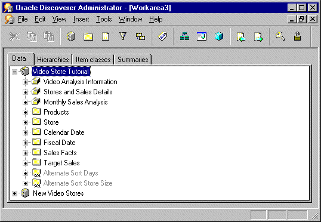
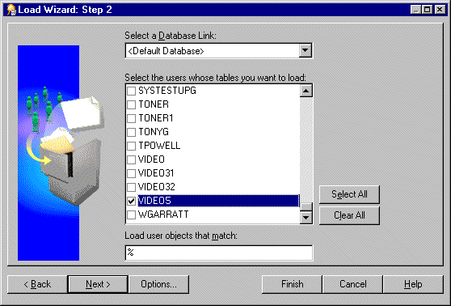
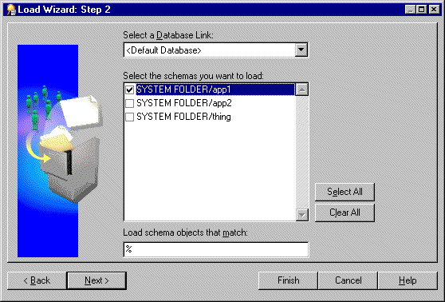
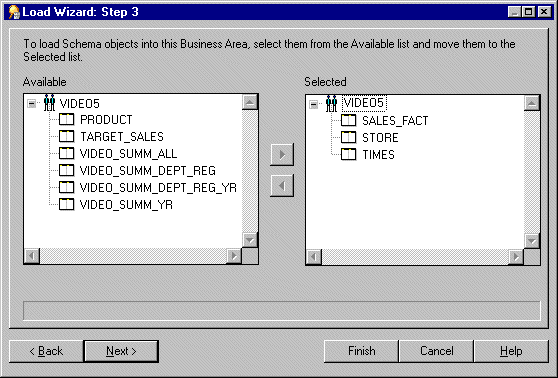
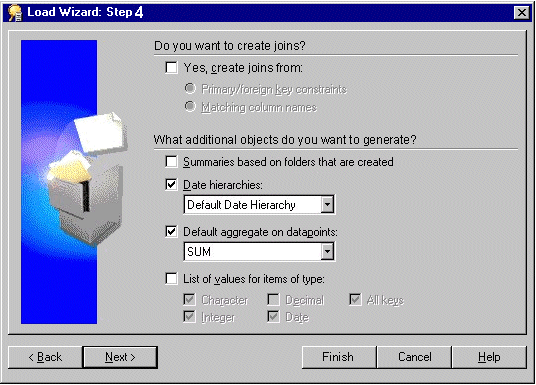
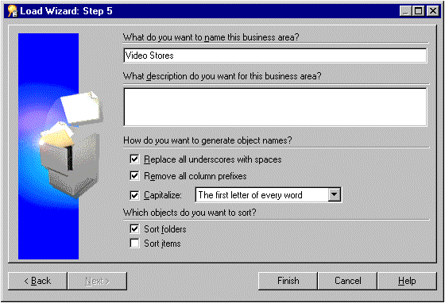
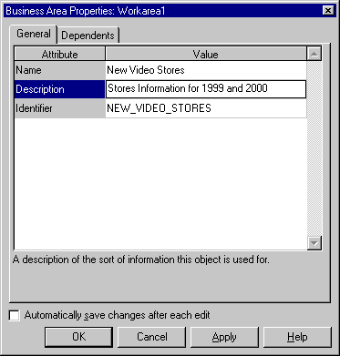
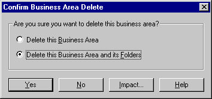
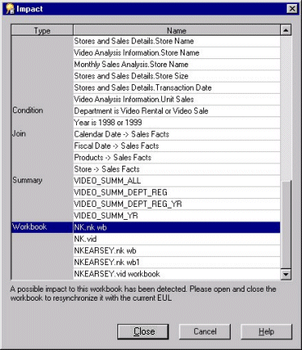
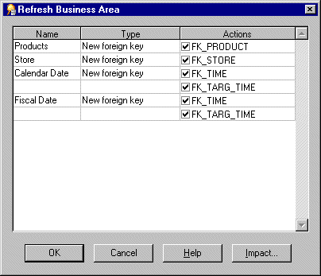

4
Creating and maintaining business areas
Creating and maintaining business areas
This chapter explains how you create and maintain business areas using Discoverer Administrator, and contains the following topics:
What are business areas?
Business areas are conceptual groupings of tables and/or views designed to match Discoverer end users specific data requirements. For example, an accounting department needs a business area that represents data about budgets and finance. Alternatively, managers in a human resources department need a business area specifically for departments and employee information.
Discoverer Administrator displays a business area as a file cabinet on the Data tab of the Workarea. You can open a business area to display its folders and items (for more information, see Chapter 5, "What are folders?" and Chapter 8, "What are items?").
Figure 4-1 Workarea: Data tab displaying business areas, folders and items

Text description of the illustration bawkarea.gif
How to prepare to build a new business area
You create a business area in Discoverer Administrator using the Load Wizard (for more information, see Chapter 4, "What is the Load Wizard?"). Before you start the Load Wizard, prepare by sketching out the business area design. Keep in mind what will be useful to the Discoverer end users whose purposes the business area will serve.
Use the following guidelines:
- Interview your users for a clear understanding of their requirements. Use the list of questions in Chapter 2, "What are the prerequisites for using Oracle Discoverer?" as a guideline for your user interviews.
- Identify the data source and have a clear understanding of its design.
- Identify which tables, views, and columns are required. Identify those that are likely to be included in multiple business areas. For example, the Employee folder might need to be in both the Sales and Human Resources business areas.
- Map out the necessary joins and determine whether they exist in the database or will have to be created by you using Discoverer Administrator. Joins might be predefined in the database with primary/foreign key constraints, or column names in different tables may match in ways that trigger sensible join conditions. For more information, see Chapter 9, "What are joins?".
- Identify security issues and access privileges. Include the user names the business area is to serve.
Keep in mind that your design is likely to change as you add the objects that will make the business area a useful and efficient analysis tool. The sketch provides a framework for you to modify and build upon.
What is the Load Wizard?
The Load Wizard provides a user-friendly interface to create a business area and enables you to quickly:
- name and describe the business area
- load metadata into the business area
- and automatically:
How to create a business area using the Load Wizard
If you are already connected to Discoverer Administrator
- Choose Insert | Business Area | From Database...then follow step 2 below.
If you have just connected to Discoverer Administrator
- Click Create a new business area (conditional option, displayed only when connecting to Discoverer Administrator).
Note: The Load Wizard starts automatically when you connect to Discoverer Administrator and your username has access to an EUL.
- Select one of the following options to specify where you want to load the metadata from and click Next to display the "Load Wizard: Step 2 dialog":
For more information about the online dictionary and Gateway see the "Load Wizard: Step 1 dialog".
Loading from the online dictionary
The "Load Wizard: Step 2 dialog" enables you to define the user objects to load into your new business area.
Figure 4-2 Load Wizard: Step 2 dialog

Text description of the illustration lw2.gif
- Select the database link from the Select a Database Link drop down list.
This displays the default database for the current user ID. The drop down list displays only the databases that the current user ID can connect to, based on any private or public database links that the user has access to.
- Select a check box (for each database user) to load the data dictionary definitions of the database objects owned by each selected database user, into the business area.
The database users displayed are those that exist on the selected database.
- (optional) Specify the pattern that a user's objects must match to be loaded into the business area in the field Load user objects that match.
The % symbol is displayed by default and is a wildcard that matches any character or string of characters. To reduce the number of schema objects that can be loaded from the database, use the wildcard in combination with other characters as follows:
- (optional) Click Options to specify the type of tables to be loaded (for further information, see the "Online Dictionary Options dialog").
For example, whether public or private, or whether owned by or accessible to the users you select.
By default, the Load Wizard will load only:
- tables owned by the users specified
- private tables
- Click Next and go to "Selecting tables and views".
Loading from a Gateway
The "Load Wizard: Step 2 dialog" enables you to define the schema objects to load into your new business area.
Figure 4-3 Load Wizard: Step 2 dialog

Text description of the illustration lw2gw.gif
- Select the database link from the Select a Database Link drop down list.
The Select a Database Link field displays the default database for the current user ID. The drop down list displays only the databases that the current user ID can connect to.
- Select a check box for each schema that you want to load into the business area.
The schemas displayed are those that exist on the selected database.
- Specify the pattern that schema objects must match to be loaded into the business area (in the Load schema objects that match field) and click Next.
The % symbol is displayed by default and is a wildcard that matches any character or string of characters. To reduce the number of schema objects that can be loaded from the database, use the wildcard in combination with other characters as follows:
Selecting tables and views
The "Load Wizard: Step 3 dialog" enables you to select tables and views (schema objects) to load into the business area.
Figure 4-4 Load Wizard: Step 3 dialog

Text description of the illustration lw3.gif
The Available list displays a hierarchical list of users (via the on-line dictionary) or schemas (via the gateway) and the tables and views that are available to load into the business area. You can expand and collapse levels of the hierarchy by clicking the + and - signs.
To select tables or views to load into the business area:
- Move the tables or views that you want to load into the business area, from the Available list to the Selected list.
You can select more than one table or view at a time by holding down the Ctrl key and clicking another table or view.
- Click Next to display the "Load Wizard: Step 4 dialog" where you can specify how Discoverer Administrator creates joins and which additional objects Discoverer Administrator generates for the new business area.
Go to "Specifying what Discoverer Administrator generates for the business area".
Specifying what Discoverer Administrator generates for the business area
The "Load Wizard: Step 4 dialog" enables you to decide what Discoverer Administrator generates for the business area, in terms of joins, summary folders, date hierarchies, default aggregates on datapoints and lists of values.
Figure 4-5 Load Wizard: Step 4 dialog

Text description of the illustration lw4.gif
To specify what Discoverer Administrator generates for the business area:
- Select whether you want Discoverer Administrator to create joins and if so select an appropriate join option.
- Select the additional objects you want to generate (for reference information about this dialog, see the "Load Wizard: Step 4 dialog").
- Click Next to display the "Load Wizard: Step 5 dialog".
Go to "Naming the business area, specifying object name and sorting options".
Naming the business area, specifying object name and sorting options
The "Load Wizard: Step 5 dialog" enables you to enter a name and description and specify how Discoverer Administrator generates object names and which objects to sort for the business area.
Figure 4-6 Load Wizard: Step 5 dialog

Text description of the illustration lw5.gif
To name the business area and specify the folder and item, naming and sorting options:
- Specify a name, description and select the check boxes for how you want Discoverer Administrator to generate folder and item names and whether you want to sort folders and/or items for the business area and click Finish.
- (conditional step) This step (and the next step) applies only if you selected the check box, Summaries based on folders that are created, in the Load Wizard: Step 4.
Note: Discoverer Administrator displays the Recommended Summaries dialog that provides information about the summary folders that Automated Summary Management (ASM) will create for you (for more information about summary folders, see "Summary Wizard (ASM): Recommended Summaries dialog" and Chapter 13, "What are summary folders?").
- Click Create to confirm your choice.
Discoverer Administrator displays a progress indicator while it generates your new business area (and summaries, if appropriate). When finished, the progress indicator disappears and the new business area is displayed on the "Workarea: Data tab".
Note: If you loaded your metadata from Oracle Designer, you must refresh the business area before it can be used. For more information, see "How to synchronize a business area with the database".
Important Note: User Access
A new business area (and the data it contains), can only be accessed by the user ID that was used to create it. For more information about how to grant access privileges to other user IDs, see Chapter 6, "How to specify a user or role (responsibility) that can access a business area".
How to open an existing business area when connecting to Discoverer Administrator
Note: The Load Wizard starts automatically when you connect to Discoverer Administrator.
To open an existing business area when connecting to Discoverer Administrator:
- Click Open an existing business area in the "Load Wizard: Step 1 dialog" to display all the business areas in the EUL of the database to which you are connected.
- Select a check box for each business area that you want to open or click Select All to select all the business areas.
- Click Finish to open the selected business area(s).
How to open an existing business area when already connected to Discoverer Administrator
To open an existing business area when already connected to Discoverer Administrator:
- Choose File | Open to display the "Open Business Area dialog".
- Move the business areas that you want to open from the Available list to the Selected list.
You can select more than one business area at a time by holding down the Ctrl key and clicking another business area.
- Click OK to open the selected business area(s).
How to copy business areas between EULs
To copy a business area from one EUL to another (e.g. from a development system to a production system) you must first export the business area from the first EUL then reconnect to the second EUL and import the export file for the business area into the second EUL:
- To export a business area to a file, carry out the steps outlined in the following task using the link below:
Once you have completed the above task, go to the next step below.
- Choose File | Connect.
- Connect to the EUL that you want to move the business area into.
- Choose File | Import.
- To import the business area (exported in step 1, above) into the current EUL, carry out the steps outlined in the following task using the link below:
Notes
The Export option exports the definitions for the business area only. It does not export the database, EUL tables, workbooks, or database objects referenced by the business area definitions.
How to edit business area properties
To edit the properties of a business area:
- Click a business area on the "Workarea: Data tab" and choose Edit | Properties to display the "Business Area Properties dialog".
Figure 4-7 Business Area Properties dialog

Text description of the illustration baprop.gif
- Set the business area name and description as required.
Warning: It is not advisable to change an identifier as it can affect the relationships between EUL objects. Do not change the identifier unless you understand the impact of the change. For example, if you are developing EUL patches in a test environment to be imported to a production environment.
- Click OK to confirm any changes made.
How to delete a business area
To delete a business area:
- Click a business area on the "Workarea: Data tab" and choose Edit | Delete to display the "Confirm Business Area Delete dialog".
Figure 4-8 Confirm Business Area Delete dialog

Text description of the illustration badel.gif
- Specify the scope of deletion that you require:
- Select the Delete this Business Area radio button to remove the business area but not its folders, they remain in the EUL.
Note: Folders can exist in the EUL but not belong to a business area (orphan folders).
- Select the Delete this Business Area and its Folders radio button to remove the business area and all of the folders contained in that business area.
Note: Folders that are part of another business area are not removed.
Note: This is the default option and is usually recommended.
- (optional) To see the objects that might be affected by deleting this business area:
- Click Impact to display the "Impact dialog".
Figure 4-9 Impact dialog

Text description of the illustration impacta.gif
The Impact dialog enables you to review the other EUL objects that might be affected when you delete a business area.
Note: The Impact dialog does not show the impact on workbooks saved to the file system (i.e. in .dis files).
- (optional) Select a row to view text at the bottom of the list, indicating what affect the current action will have on the EUL object.
- When you have finished reviewing the impact of deleting the business area, click Close to close the Impact dialog.
- Click Yes to delete the selected business area, based on the choices you have made.
How to synchronize a business area with the database
You use the Refresh command to synchronize a business area with the source dictionary whenever the database schema is changed.
Examples of typical database modifications might include the following:
- adding tables
- adding columns
- adding joins
- changing the ownership of a table
To synchronize a business area with the database:
- Select the business area that you want to refresh in the "Workarea: Data tab".
- Choose File | Refresh to open the "Refresh Wizard dialog".
- Select one of the following Refresh business areas from options:
- On-line dictionary
- Gateway
- Click Finish to begin the refresh business areas process.
Where any objects have changed since the last refresh Discoverer Administrator displays the "Refresh Business Area dialog".
Figure 4-10 Refresh Business Area dialog

Text description of the illustration baref.gif
The Refresh Business Area dialog displays the:
- name of the object that has changed since the last refresh
- type of change that has occurred to objects since the last refresh
- effect that the refresh will have on the object
- To decide whether you want to refresh each object:
- select a check box next to each object you want to refresh
- clear a check box next to each object you do not want to refresh
- (optional) You can review objects that will be deleted when you refresh this business area. To see the potential impact of the refresh:
- Click Impact to display the "Impact dialog".
- When you have finished reviewing the impact of refreshing this business area, click Close to close the Impact dialog.
- Click OK for Discoverer Administrator to refresh the business area or selected objects.
Notes about business area creation and maintenance
Why might a business area (or folders within it) not be visible to a user?
Having created a business area, it is possible that a Discoverer end user might not be able to see the business area (or folders within the business area). For a user to see a business area or folders within it, the following conditions must all be met:
- The user must have access to the EUL. If the user is not the EUL owner, either the EUL must be publicly accessible or the user must be granted explicit access to the EUL. Also make sure that the user is accessing the EUL in which the business area was created.
- The user must have access to the business area. For more information about granting access to business areas, see:
- The user must have database SELECT access to the tables or views on which the folders in the business area are based.
Hint: If you are not sure whether a particular user has access to a specific database table or view, log in to SQL*Plus as the user and type:
select count(*) from <ownername>.<objectname>;
where:
- <ownername> is the database username of the owner of the table or view
- <objectname> is the name of the table or view
If the user does not have access to the database table or view, an error message is displayed.
- The folders in a business area must be based on current database table or view definitions. If the table or view definition has changed, you must refresh the business area (for more information, see "How to synchronize a business area with the database"). For example, an end user might not be able to see a folder if an underlying column that the folder depends on was deleted from the table. To enable the Discoverer end user to see a folder in this, you must refresh the business area containing the folder.